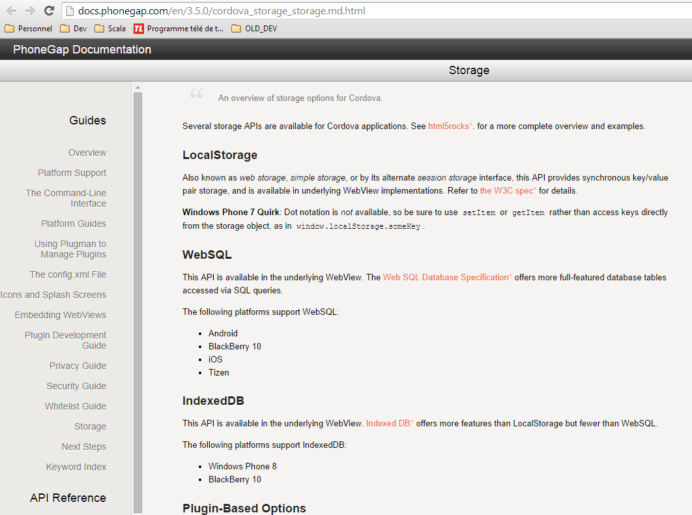
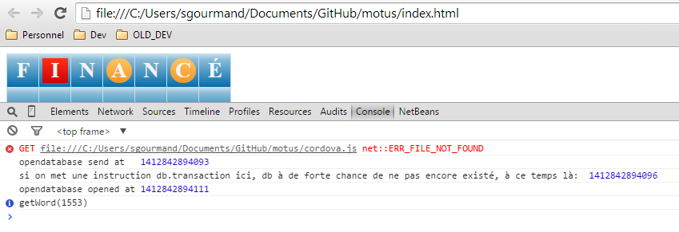

Lors de la récuperation du dictionnaire, pour ne récuperer que les mot qui n'ont que 7 caracteres, j'ai choisi de faire un import data dans une BDD mysql
puis à l'aide de la fonction LENGTH() de mysql, j'ai exporté les mots de 7 lettres.
Probleme: LENGHT() ne renvoie pas la longueur du mot, mais la taille que prend un mot, et un accent prend plus de place suivant l'encodage choisi
(utf8, latin1)... bien que les accents apparaissaient correctement, il a fallut "jouer" sur l'encodage du fichier txt du dictionnaire, sur l'encodage d'import, et l'encodage de stockage mysql, pour qu'ils correspondent.
une autre solution est d'utilisé la fonction character_length() à la place de length(), mais instinctivement, on a tendance à utiliser length() qui est trompeur...
purge du dictionnaire,
l'export mysql propose un format json, le probleme est qu'il est du type : tableau d'objet avec nom_de_colonne:valeur_colonne, le nom de colonne etant "mot" j'ai du faire une expression reguliere de remplacement :
\{"mot":"([^"]+)"\} par "$1"
le dictionnaire freelang nous donne des villes et prenom, j'ai choisi de purger tout les mots qui commençait par une majuscule :
"[A-Z][^"]+", remplacé par "" (rien)
Le dictionnaire ne comporte plus que les mots de 7 lettres en simple tableau javascript ( le temps d'etre inséré en BDD ) exempt de prénom et ville
Le choix de la bdd local, bien que websql est deprecated, et que tout le monde conseil d'utilisé innoDB, seul websql est compatible avec IOS et android pour les appli phonegap en ce moment.

websql utilise des transaction asynchrones, le problemes est que ces callback de ne lance que si la requete a été executée.
db = openDatabase('bdd', '', 'database', 5 * 1024 * 1024, callback);
ce callback n'est donc appellé qu'une seule fois dans le processus, a la création de la BDD, si on utilise se callback pour continuer le processus, au rechargement de l'appli, plus rien ne se passera.
si on continue le requetage juste en dessous, il y a des chance qu'au premier lancement la base n'a pas terminé de se créer que l'on cherche a interagir avec des tables.
Par contre db, lui existe a la création de la base de donnée, et au appel suivant, la solution a été de tester toutes les milli-secondes l'existance de db, puis une fois cette existance certaine, continuer le processus à ce niveau là ( en appellant une fonction init() ).

Une autre problematique websql a été que le probleme ci-dessus s'applique egalement aux transaction:
un tx.executeSql('CREATE TABLE IF NOT EXISTS dictionnaire (word VARCHAR)'); a bien un callback, mais n'est appelée que si le sql est executé...
hors ici il ne le sera que la premiere fois, les autres fois la table existant, elle ne sera pas recrée et le callback ne sera pas appelée.
Le probleme est que ni la transaction, ni la requete sql ne renvoie un objet, on ne peut pas tester sur l'existance du retour...
essayons de tester l'inexistance ? un retour void mettrai une variable existance a undefined :
les tests montrent que le script met cette variable a undefined avant la fin du requetage... c'est une impasse... le callback prévu n'est pas fiable car au rechargement il n'est plus appelé.
La solution choisie est une attente arbitraire avec setTimeout(), avec une attente assez longue : 200 millisecondes pour créer une table d'une colonne parait raisonnable, surtout qu'en condition de test la création est de l'ordre de 10ms, et on reste dans un temps correct d'attente pour un utilisateur.
Je pourrais aussi envoyer regulierement ( par un setInterval()) une requete de selection sur cette table, et arreter la verif des que je n'ai plus d'erreur d'existance de table, mais bon spammer de requete n'est pas une meilleur solution.
en sachant que la transaction est un callback en soit, le set timeout sera integré dedans, apres le requetage sql
Le chargement du dictionnaire est une problematique en soit. Le choix a été de stocker le dictionnaire en bdd pour facilité les verifications des mot rentrer par l'utilisateur.
le chargement est assez long ( 5 à 7min ) pour que l'utilisateur ferme l'application et la reouvre.
ce temps dépend de l'interval choisie, sachant qu'en moyenne une requete d'insertion met 5 sec, mais qu'il faut laisser de la place a d'autres requete de s'y glisser, j'ai opté de faire une requete toutes les 100ms
j'ai choisi de stocker en local storage ( equivalent cookie pour appli smartphone) l'incrémentation des mots inséré ( inc_dico ).
cela permet de reprendre le chargement là ou il est resté, et j'ai enfin pu utilisé le callback de websql pour l'insertion de donnée, m'assurant que le mot a bien été enregistré en base de donnée avant d'incrémenter au mot suivant.
A noter 4 choses :
1) j'ai choisi de lancer les requetes d'insertions à interval regulier et d'arreter l'interval une fois l'inc_dico correspondant a la taille du dictionnaire car :
si j'avait fait une simple boucle for ( chose que j'ai fait au début ) les 3638 transactions d'insertions du dictionnaire devront se terminée avant d'en faire d'autres... ( 7 minutes a ne rien faire... )
avec un interval, je peut "glisser" d'autres transaction, donc celle de choisir un mot, et donc de commencer le jeu avant que le dico soit rempli.
le dictionnaire se rempli donc sans bloquer le jeu, ce qui est interessant, car il est vraiment tres long a se remplir... la premiere fois, le dictionnaire ne proposera que des mots rempli, donc commençant par A, ce qui n'est pas une gene en soit.
2) en websql, il est impossible d'inserer plusieurs champs a la fois séparer simplement par une virgule ( insert into .. values ("mot1"),("mot2"),("mot3")... un tweak permet de le faire en union select, mais est limité à 500.
3) je log/commente mon code en "fran-glais", une mauvaise habitude qui me colle à la peau...
4) websql gere l'autoincrement d'une primarykey : rowId, donc pas besoin de rajouter un champ ID_word
distinction portrait/paysage.
la longueur du clavier virtuel peut etre plus grande en portrait, j'ai eu besoin de differencier ce changement d'orientation pour regler cette longueur.
naturellement j'ai chercher des plugins phonegap, il y en a 2 actuellement, mais ils ne sont pas compatible avec ios, et ne fonctionne pas comme esperé, à la detection portrait/landscape, quoi qu'il arrive cela affichait : default.
sur internet j'ai vu que ios et android lançait l'evenemenet orientationchange, avec en paramettre un objet specifiant l'orientation. malheureusement avec mes tests mon smartphone ne lance cette evenement avec aucun parametre.
mais heureusements on peut facilement recalculer l'orientation portrait/paysage en comparant simplement la longueur entre width et le height. a noter le widthxheight sur une page correspond a heightxwidth sur le mobile, c'est inversé, un landscape web correspond a un portrait mobile...
apres une recherche plus aprronfondie, les smartphones donne une valeur d'orientation avec window.orientation mais la valeur differe suivant le type de mobile, donc inutilisable dans un context multi-device.